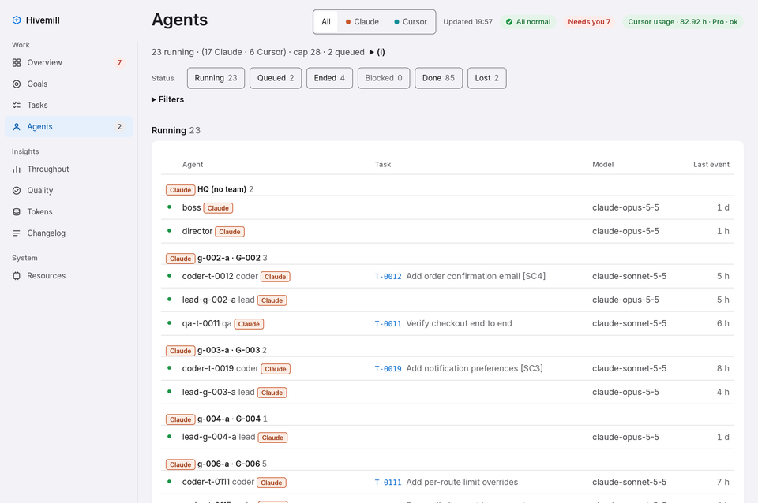
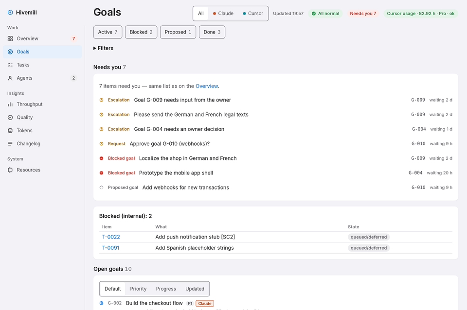
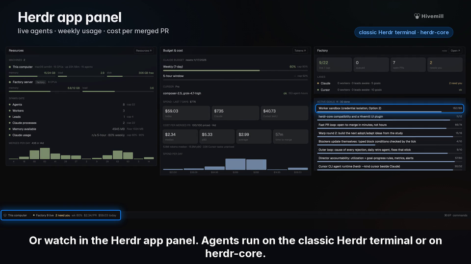

Ask for a change. Get a reviewed pull request.
Hivemill is a self-hosted software factory of AI coding agents. You tell the boss what you want. A team builds it, checks it and merges it.
- AskYou tell the boss. It becomes a goal.
- TeamA director staffs a lead. The lead orders the tasks.
- Pull requestA coder opens it. A coder cannot merge.
- Review and QAOne reads the diff. One runs the tests.
- Judge mergesWhen both pass. A failure goes back with findings.
A factory, not a chat window.
Agents have roles: boss, director, lead, coder, reviewer, QA, judge. Only the judge merges, and only after review and QA agree.

One change, five checkpoints.
- You ask. The boss turns it into a goal.
- A team forms. A lead orders the tasks.
- A coder opens a pull request.
- A reviewer and QA check it.
- A judge merges when both pass.

Take the pieces you need.
The roles, the kit skills and the herdr-core plugin are shared so you can copy them into your own factory.

Install it inside a logged-in Claude Code.
/plugin marketplace add volekerb/hivemill
/plugin install hivemill
/hivemill:setupThe factory runs on Debian or Ubuntu. A Mac can watch through the Herdr desktop app. Install guide · Hivemill on GitHub